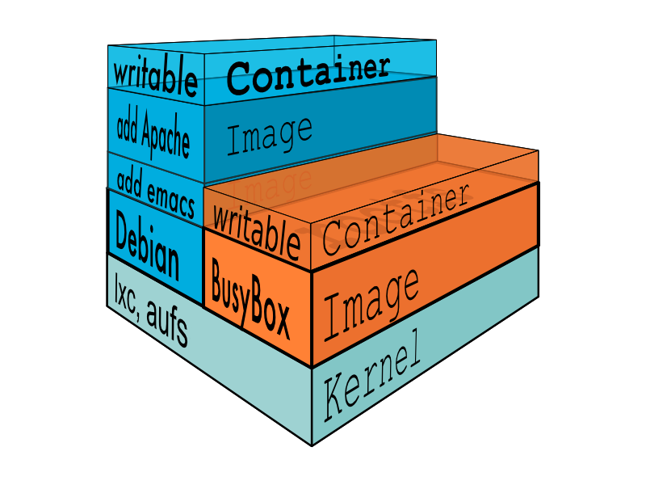

Andrea Tosatto
@_hilbert_
Docker 101Coding, testing, shipping with Docker
Inside the docker-engine(linux edition)
Heavyweight vs Lightweight Virtualization
LXC
LXC let you run a Linux system within another Linux system
A container is a group of processes put together in an isolated environment
(namespace)
cGroups
Expose a virtual file-system to
Limit,
Account,
Isolate
the resources used by a process.
AUFS
Takes an existing filesystem and transparently overlays it on a newer filesystem
Merges several directories and provide a single merged view of it.
AUFS
Coding with Docker
Dockerfile
FROM google/nodejs
RUN npm install -g gulp bower
RUN echo '{ "allow_root": true }' > /root/.bowerrc
WORKDIR /presentation
ADD . /presentation
RUN npm install && bower install
EXPOSE 8080
CMD [ ]
ENTRYPOINT ["gulp", "connect"]
FROM

RUN
Executes shell scripts trasforming the base image's file-system
Every RUN is actually new AUFS layer
ADD
Copies new files or directories and adds them to the filesystem of the container at the given path
ENV
Sets an environment variable into the container
Used to pass configuration options to applications
EXPOSE
Informs Docker that the container will listen on the specified network ports at runtime
To map those ports to the host, at runtime, use the -p flag
docker build
docker run
Testing with Docker
Dockerfile.test
Easy build, run, test and discard worflow
Test, Dev and Prod environments are the same, for real!
Runtime environment versioning
An example..
FROM hilbert/docker101:latest
RUN npm install karma --save-dev
RUN npm install karma-jasmine --save-dev
ENTRYPOINT ["./node_modules/karma/bin/karma", "start"]